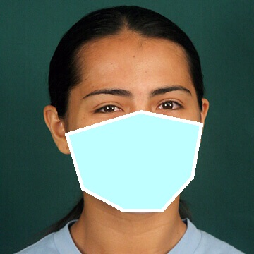
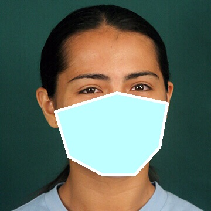

By Lauren Leffer
Three weeks into mentoring a new colleague, Dolly Bindon—a hospital nurse in Colorado—finally ate lunch with her trainee for the first time. They sat down at an outdoor table and pulled down their masks.
“I saw the bottom half of her face for the first time,” says Bindon. “We were together three days a week, 12 hours a day, for three, four weeks. And I was like, ‘huh, who knew? That’s what your face looks like?’”
It's been over 8 months since the WHO declared COVID-19 a global pandemic, and masks are here to stay. 49 out of 50 U.S. states now require them in some public settings. Even basic cloth face coverings are estimated to reduce transmission of the virus by 30% or more, and without a vaccine, masks remain one of our best lines of defense. But, when worn correctly, they hide the lower face.
With the mouth, cheeks, and chin obscured, it becomes harder to recognize and interpret other people’s faces, says Roxane Itier, cognitive neuroscientist at University of Waterloo. Emotion is key to understanding others. Without it, conversations are uninflected, “just like reading words on a page with no punctuation,” says David Matsumoto, psychology researcher at San Francisco State University.
How do people communicate emotion?
With words, people can say what’s felt directly. But according to Matsumoto, humans also rely heavily on non-verbal cues: tone of voice, gesture, touch, body language, and facial expressions. “The channel that communicates the most specific emotional states is the face,” he says.
In the 1970s, psychologist Paul Eckman classified a set of basic emotions. To be considered basic, each emotion had to be universal across cultures, expressed through certain shared facial expressions, and spontaneous—or happening organically in response to an appropriate trigger. “Like, for example, you see a bear, you're scared,” says Lisa Aziz-Zadeh, cognitive neuroscientist at University of Southern California. Today, most experts in psychology and neuroscience agree that there are six basic emotions: happiness, sadness, fear, disgust, anger, and surprise.
Expressing basic emotions gets the full face involved. “It’s not just in the mouth…there’s an associated pattern of muscles for the eyes, for the cheeks, for the eyebrows,” says Aziz-Zadeh. Surprise and fear trigger the eyes to open wider, says Itier. Disgust, according to Matsumoto, is shown in a wrinkle at the bridge of the nose. Happiness is expressed in the corners of the eyes and upper cheeks. Some basic emotions share facial trademarks, like the close-knit brows of disgust and anger, but there are enough unique characteristics of each—especially when the whole face is seen together—that most people can tell these expressions apart.
What gets lost with masks?
Not all emotions are shown in all parts of the face, though. Matsumoto says contempt, sometimes also considered a basic emotion because of its universality, is often only demonstrated through a small twist of the mouth. More subtle expressions, combinations of emotions, or the intensity of an emotion can all become much harder to interpret when the lower face is covered.
“If you’re covering the face, you are impoverishing the whole visual experience,” says Itier. According to her, the time it takes to read other peoples’ facial expressions likely increases when masks are worn, while the accuracy of those interpretations goes down. “Humans didn’t evolve to read half the face,” says Matsumoto.
What does all this mean?
Wearing masks in public remains critically important for reducing the spread of COVID-19 and shouldn’t be sacrificed for a stranger’s smile. 95% mask compliance could save as many as 100,000 lives in the U.S. through January 2021, according to one analysis.
And, on top of saving lives, “all is not lost,” Matsumoto says, “I think that there’s good things to be said about communicating well, even with masks”. With all the other modes of emotional communication at play, missing out on the mouth doesn’t stop humans from understanding each other.
“People are very ingenious in finding ways to compensate and adapt to the environment, because communication is so, so vital,” says Matsumoto. And, even in a non-pandemic reality, facial expressions are rarely the sole communicating force. “We also use context enormously,” says Itier. For example, that scary bear might illicit a similar face to walking in on your own surprise party. But, observers would interpret those expressions differently.
If you’re concerned with understanding peoples’ emotions and sharing your own, you could purchase a clear mask, focus more on tone of voice, pay close attention to conversational context, or just look to the eyes. After all, in professions like nursing, masks have long-been commonplace—and healthcare workers still manage to communicate effectively.
Though, Bindon says things do feel different at the hospital now. Patients wear masks, and some of the lighthearted exchanges she’s used to don’t translate as well.
“We have to ask patients every day: Where are you? What's your name? What day is it? And sometimes they’ll be like making a dad joke, which has always happened in the history of every patient in the hospital ever. And they pretend that they don't know what day it is…But like, I don't know, if you're wearing a mask—joking? Are you serious? I don't know.”
Can you see beyond the mask? Take your best guess at what face each person is making, and then move the slider to see what you missed.
Answers are at the bottom of this page.
 

Answer Key
- Anger
- Disgust
- Fear
- Happiness
- Sadness
- Surprise
- Contempt